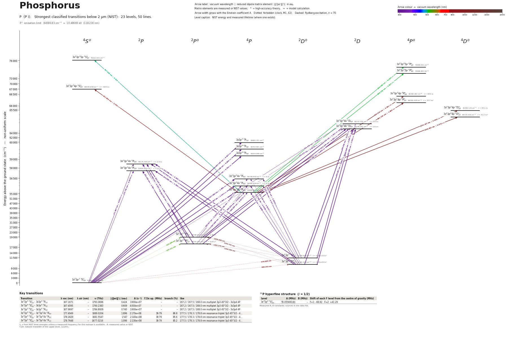

Phosphorus energy level diagram
Energy levels and transitions of neutral phosphorus (P I): the 50 strongest classified lines below 2 µm from the NIST Atomic Spectra Database and the 23 levels they connect, each line with its vacuum wavelength, frequency and, for 42 of them, the reduced dipole matrix element derived from the NIST transition rate. Measured lifetimes, transition rates, hyperfine constants and isotope shifts from the literature are included, each with its citation.
Hover a line or a level to isolate it, click to keep it selected. Scroll to zoom, drag to move.

Download: diagram (PDF) diagram (SVG) transitions (CSV) levels (CSV) source code

Key transitions of phosphorus
| Transition | λ vac (nm) | λ air (nm) | ν (THz) | |⟨J‖er‖J′⟩| (ea₀) | A (s⁻¹) | Γ/2π up. (MHz) | branch (%) | Use |
|---|---|---|---|---|---|---|---|---|
| 3s23p3 4S°3/2 – 3s3p4 4P1/2 | 167.1671 | – | 1793.3696 | 0.424 | 3.900e+07 | – | – | 167.2 / 167.5 / 168.0 nm multiplet 3p3 4S°3/2 - 3s3p4 4P |
| 3s23p3 4S°3/2 – 3s3p4 4P3/2 | 167.4595 | – | 1790.2383 | 0.609 | 4.000e+07 | – | – | 167.2 / 167.5 / 168.0 nm multiplet 3p3 4S°3/2 - 3s3p4 4P |
| 3s23p3 4S°3/2 – 3s3p4 4P5/2 | 167.9697 | – | 1784.8009 | 0.740 | 3.900e+07 | – | – | 167.2 / 167.5 / 168.0 nm multiplet 3p3 4S°3/2 - 3s3p4 4P |
| 3s23p3 4S°3/2 – 3s23p24s 4P5/2 | 177.4949 | – | 1689.0204 | 1.896 | 2.170e+08 | 39.79 | 86.8 | 177.5 / 178.3 / 178.8 nm resonance triplet 3p3 4S°3/2 - 4… |
| 3s23p3 4S°3/2 – 3s23p24s 4P3/2 | 178.2829 | – | 1681.5547 | 1.547 | 2.140e+08 | 39.79 | 85.6 | 177.5 / 178.3 / 178.8 nm resonance triplet 3p3 4S°3/2 - 4… |
| 3s23p3 4S°3/2 – 3s23p24s 4P1/2 | 178.7648 | – | 1677.0216 | 1.096 | 2.130e+08 | 39.79 | 85.2 | 177.5 / 178.3 / 178.8 nm resonance triplet 3p3 4S°3/2 - 4… |
λ, ν from NIST level energies unless a measured frequency for this isotope is available. A: measured value or NIST. Γ/2π: natural linewidth of the upper level, 1/(2πτ).
31P hyperfine structure (I = 1/2)
| Level | A (MHz) | B (MHz) | Shift of each F level from the centre of gravity (MHz) |
|---|---|---|---|
| 3s23p3 4S°3/2 | 55.055691(8) | – | F=1: -68.82 F=2: +41.29 |
Measured A, B constants; sources in the data file.
Listed P transitions below 2 µm
| Lower level | Upper level | λ vacuum (nm) | λ air (nm) | ν (THz) | Type | |⟨J‖er‖J′⟩| (ea₀) | A (s⁻¹) | Branching (%) | Source of matrix element / A |
|---|---|---|---|---|---|---|---|---|---|
| 3s23p3 4S°3/2 | 3s23p24s 2D5/2 | 153.4752 | – | 1953.3615 | E1 (intercombination) | 0.0217 NIST | 4.400e+04 NIST | 0.01 | NIST ASD (accuracy E) |
| 3s23p3 4S°3/2 | 3s23p24s 2D3/2 | 153.4772 | – | 1953.3350 | E1 (intercombination) | 0.00765 NIST | 8.200e+03 NIST | 0 | NIST ASD (accuracy E) |
| 3s23p3 4S°3/2 | 3s3p4 4P1/2 | 167.1671 | – | 1793.3696 | E1 | 0.424 NIST | 3.900e+07 NIST | – | NIST ASD (accuracy D) |
| 3s23p3 4S°3/2 | 3s3p4 4P3/2 | 167.4595 | – | 1790.2383 | E1 | 0.609 NIST | 4.000e+07 NIST | – | NIST ASD (accuracy D) |
| 3s23p3 4S°3/2 | 3s3p4 4P5/2 | 167.9697 | – | 1784.8009 | E1 | 0.740 NIST | 3.900e+07 NIST | – | NIST ASD (accuracy D) |
| 3s23p3 4S°3/2 | 3s23p24s 2P3/2 | 171.8970 | – | 1744.0236 | E1 (intercombination) | 0.0511 NIST | 2.600e+05 NIST | 0.06 | NIST ASD (accuracy E) |
| 3s23p3 4S°3/2 | 3s23p24s 2P1/2 | 172.7815 | – | 1735.0960 | E1 (intercombination) | 0.0276 NIST | 1.500e+05 NIST | 0.04 | NIST ASD (accuracy E) |
| 3s23p3 4S°3/2 | 3s23p24s 4P5/2 | 177.4949 | – | 1689.0204 | E1 | 1.896 NIST | 2.170e+08 NIST | 86.8 | NIST ASD (accuracy C) |
| 3s23p3 4S°3/2 | 3s23p24s 4P3/2 | 178.2829 | – | 1681.5547 | E1 | 1.547 NIST | 2.140e+08 NIST | 85.6 | NIST ASD (accuracy C) |
| 3s23p3 4S°3/2 | 3s23p24s 4P1/2 | 178.7648 | – | 1677.0216 | E1 | 1.096 NIST | 2.130e+08 NIST | 85.2 | NIST ASD (accuracy C) |
| 3s23p3 2D°3/2 | 3s23p24s 2D5/2 | 185.8871 | – | 1612.7667 | E1 | 0.664 NIST | 2.320e+07 NIST | 6.73 | NIST ASD (accuracy C) |
| 3s23p3 2D°3/2 | 3s23p24s 2D3/2 | 185.8901 | – | 1612.7402 | E1 | 1.795 NIST | 2.540e+08 NIST | 73.7 | NIST ASD (accuracy C) |
| 3s23p3 2D°5/2 | 3s23p24s 2D5/2 | 185.9410 | – | 1612.2987 | E1 | 2.242 NIST | 2.640e+08 NIST | 76.6 | NIST ASD (accuracy C) |
| 3s23p3 2D°5/2 | 3s23p24s 2D3/2 | 185.9441 | – | 1612.2722 | E1 | 0.536 NIST | 2.260e+07 NIST | 6.55 | NIST ASD (accuracy C) |
| 3s23p3 2D°3/2 | 3s23p24s 2P3/2 | 213.6143 | 213.5469 | 1403.4288 | E1 | 0.637 NIST | 2.110e+07 NIST | 5.06 | NIST ASD (accuracy C) |
| 3s23p3 2D°5/2 | 3s23p24s 2P3/2 | 213.6856 | 213.6182 | 1402.9608 | E1 | 2.335 NIST | 2.830e+08 NIST | 67.9 | NIST ASD (accuracy C) |
| 3s23p3 2D°3/2 | 3s23p24s 2P1/2 | 214.9819 | 214.9142 | 1394.5012 | E1 | 1.766 NIST | 3.180e+08 NIST | 76.3 | NIST ASD (accuracy C) |
| 3s23p3 2P°1/2 | 3s23p24s 2D3/2 | 215.3616 | 215.2939 | 1392.0423 | E1 | 0.978 NIST | 4.850e+07 NIST | 14.1 | NIST ASD (accuracy C) |
| 3s23p3 2P°3/2 | 3s23p24s 2D5/2 | 215.4749 | 215.4072 | 1391.3103 | E1 | 1.311 NIST | 5.800e+07 NIST | 16.8 | NIST ASD (accuracy C) |
| 3s23p3 2P°3/2 | 3s23p24s 2D3/2 | 215.4790 | 215.4113 | 1391.2838 | E1 | 0.585 NIST | 1.730e+07 NIST | 5.02 | NIST ASD (accuracy C) |
| 3s23p3 2D°3/2 | 3s23p24s 4P5/2 | 222.3278 | 222.2586 | 1348.4256 | E1 (intercombination) | 0.0133 NIST | 5.400e+03 NIST | 0 | NIST ASD (accuracy E) |
| 3s23p3 2D°5/2 | 3s23p24s 4P5/2 | 222.4050 | 222.3358 | 1347.9576 | E1 (intercombination) | 0.0535 NIST | 8.800e+04 NIST | 0.04 | NIST ASD (accuracy E) |
| 3s23p3 2D°3/2 | 3s23p24s 4P3/2 | 223.5656 | 223.4961 | 1340.9598 | E1 (intercombination) | 0.0536 NIST | 1.300e+05 NIST | 0.05 | NIST ASD (accuracy E) |
| 3s23p3 2D°5/2 | 3s23p24s 4P3/2 | 223.6436 | 223.5742 | 1340.4919 | E1 (intercombination) | 0.117 NIST | 6.200e+05 NIST | 0.25 | NIST ASD (accuracy E) |
| 3s23p3 2D°3/2 | 3s23p24s 4P1/2 | 224.3239 | 224.2543 | 1336.4268 | E1 (intercombination) | 0.0668 NIST | 4.000e+05 NIST | 0.16 | NIST ASD (accuracy E) |
| 3s23p3 2P°1/2 | 3s23p24s 2P3/2 | 253.4748 | 253.3986 | 1182.7309 | E1 | 0.802 NIST | 2.000e+07 NIST | 4.8 | NIST ASD (accuracy C) |
| 3s23p3 2P°3/2 | 3s23p24s 2P3/2 | 253.6374 | 253.5612 | 1181.9724 | E1 | 1.749 NIST | 9.500e+07 NIST | 22.8 | NIST ASD (accuracy C) |
| 3s23p3 2P°1/2 | 3s23p24s 2P1/2 | 255.4026 | 255.3260 | 1173.8033 | E1 | 1.081 NIST | 7.100e+07 NIST | 17 | NIST ASD (accuracy C) |
| 3s23p3 2P°3/2 | 3s23p24s 2P1/2 | 255.5678 | 255.4911 | 1173.0448 | E1 | 0.703 NIST | 3.000e+07 NIST | 7.2 | NIST ASD (accuracy C) |
| 3s23p3 2P°3/2 | 3s23p24s 4P5/2 | 266.0166 | 265.9374 | 1126.9692 | E1 (intercombination) | 0.00151 NIST | 4.100e+01 NIST | 0 | NIST ASD (accuracy E) |
| 3s23p3 2P°1/2 | 3s23p24s 4P3/2 | 267.6093 | 267.5297 | 1120.2619 | E1 (intercombination) | 0.032 NIST | 2.700e+04 NIST | 0.01 | NIST ASD (accuracy E) |
| 3s23p3 2P°3/2 | 3s23p24s 4P3/2 | 267.7906 | 267.7110 | 1119.5035 | E1 (intercombination) | 0.0702 NIST | 1.300e+05 NIST | 0.05 | NIST ASD (accuracy E) |
| 3s23p3 2P°1/2 | 3s23p24s 4P1/2 | 268.6965 | 268.6167 | 1115.7289 | E1 (intercombination) | 0.0273 NIST | 3.900e+04 NIST | 0.02 | NIST ASD (accuracy E) |
| 3s23p3 2P°3/2 | 3s23p24s 4P1/2 | 268.8793 | 268.7995 | 1114.9705 | E1 (intercombination) | 0.028 NIST | 4.100e+04 NIST | 0.02 | NIST ASD (accuracy E) |
| 3s23p24s 4P1/2 | 3s23p25p 4S°3/2 | 497.9539 | 497.8150 | 602.0486 | E1 | 0.518 NIST | 1.100e+06 NIST | – | NIST ASD (accuracy E) |
| 3s23p24s 4P1/2 | 3s23p25p 4P°1/2 | 506.0624 | 505.9213 | 592.4022 | E1 | 0.284 NIST | 6.300e+05 NIST | – | NIST ASD (accuracy E) |
| 3s23p24s 4P1/2 | 3s23p25p 4P°3/2 | 506.3327 | 506.1915 | 592.0859 | E1 | 0.620 NIST | 1.500e+06 NIST | – | NIST ASD (accuracy E) |
| 3s23p3 4S°3/2 | 3s23p3 2P°3/2 | 533.3899 | 533.2416 | 562.0512 | E2+M1 | – | 1.080e-01 NIST | 36.5 | NIST ASD (accuracy D) |
| 3s23p3 4S°3/2 | 3s23p3 2P°1/2 | 534.1107 | 533.9622 | 561.2927 | E2+M1 | – | 4.260e-02 NIST | 21.7 | NIST ASD (accuracy D) |
| 3s23p3 4S°3/2 | 3s23p3 2D°5/2 | 878.9949 | 878.7536 | 341.0628 | E2+M1 | – | 1.991e-04 NIST | 100 | NIST ASD (accuracy C) |
| 3s23p3 4S°3/2 | 3s23p3 2D°3/2 | 880.2027 | 879.9610 | 340.5948 | E2+M1 | – | 2.970e-04 NIST | 100 | NIST ASD (accuracy D) |
| 3s23p24s 4P1/2 | 3s23p24p 4S°3/2 | 917.8331 | 917.5813 | 326.6307 | E1 | 2.763 NIST | 5.000e+06 NIST | 18.4 | NIST ASD (accuracy D) |
| 3s23p24s 4P1/2 | 3s23p24p 4P°3/2 | 959.6136 | 959.3505 | 312.4096 | E1 | 4.381 NIST | 1.100e+07 NIST | 42.8 | NIST ASD (accuracy D) |
| 3s23p24s 4P1/2 | 3s23p24p 4P°1/2 | 961.1672 | 960.9036 | 311.9046 | E1 | 1.964 NIST | 4.400e+06 NIST | 16.6 | NIST ASD (accuracy E) |
| 3s23p24s 4P1/2 | 3s23p24p 4D°3/2 | 1051.4469 | 1051.1588 | 285.1237 | E1 | 4.494 NIST | 8.800e+06 NIST | 42.3 | NIST ASD (accuracy D) |
| 3s23p24s 4P1/2 | 3s23p24p 4D°1/2 | 1059.9806 | 1059.6902 | 282.8283 | E1 | 4.470 NIST | 1.700e+07 NIST | 70.2 | NIST ASD (accuracy D) |
| 3s23p3 2D°3/2 | 3s23p3 2P°3/2 | 1353.7314 | 1353.3613 | 221.4564 | E2+M1 | – | 7.460e-02 NIST | 25.2 | NIST ASD (accuracy C) |
| 3s23p3 2D°5/2 | 3s23p3 2P°3/2 | 1356.5981 | 1356.2272 | 220.9884 | E2+M1 | – | 1.130e-01 NIST | 38.2 | NIST ASD (accuracy C) |
| 3s23p3 2D°3/2 | 3s23p3 2P°1/2 | 1358.3837 | 1358.0124 | 220.6979 | E2+M1 | – | 1.011e-01 NIST | 51.4 | NIST ASD (accuracy C) |
| 3s23p3 2D°5/2 | 3s23p3 2P°1/2 | 1361.2702 | 1360.8981 | 220.2299 | E2 | – | 5.300e-02 NIST | 27 | NIST ASD (accuracy C) |
Reduced dipole matrix elements follow the convention A = ω³|d|²/(3πε₀ħc³(2J′+1)), with J′ the upper level. Tags show where a number comes from: measured, NIST compilation, high-accuracy theory, or a model calculation.
P energy levels
P⁺ ionisation limit 84580.83 cm⁻¹ = 10.48669 eV (118.230 nm)
Sources
- Berzinsh, Svanberg, Biemont, Astron. Astrophys. 326, 412 (1997), Table 1, relativistic Ha…
- Berzinsh, Svanberg, Biemont, Astron. Astrophys. 326, 412 (1997), Table 1: two-photon UV l…
- Lambert & Pipkin, Phys. Rev. 128, 198 (1962) (erratum 129, 2836 (1963) not opened): spin-…
- NIST ASD
- NIST ASD P I lines table (tp_ref T761, accuracy C-D), local cache data/nist/P_I_lines_fro…
- NIST ASD P I lines table (tp_ref T761, accuracy C-D), local cache data/nist/P_I_lines_fro…
- NIST ASD P I lines table (tp_ref T761, accuracy C-D), local cache data/nist/P_I_lines_fro…
- NIST ASD P I lines table (tp_ref T761, accuracy C-D), local cache data/nist/P_I_lines_fro…
- NIST ASD level energies
- Savage & Lawrence, Astrophys. J. 146, 940 (1966), phase-shift method with cascade correct…
- Savage & Lawrence, Astrophys. J. 146, 940 (1966), phase-shift method with cascade correct…
- Savage & Lawrence, Astrophys. J. 146, 940 (1966), phase-shift method with cascade correct…
Level energies are the NIST ASD values (data/nist/P_I_levels.tsv); Berzinsh et al. print slightly different energies (e.g. 66813.04 for 4p 2D°3/2, NIST 66813.271). Savage & Lawrence lifetimes are multiplet values and are attached to every fine-structure level of the upper term. Berzinsh error bars are two standard deviations. Their two-photon excitation wavelengths were 299-306 nm (from 3p3 4S°3/2), detection on the 178 nm (quartets) or 214 nm (doublet) cascade. The lifetimes of the metastable 2D° and 2P° levels are derived from calculated A-values (theory). Note for the site: for the forbidden lines NIST lists separate M1 and E2 A-values at the same wavelength (e.g. 533.39 nm: M1 1.08e-1, E2 3.3e-7 s^-1); both must be summed for the decay rate. 'multiplet_intensity_fraction' is a non-schema field holding the measured relative line intensities of Mazzoni & Ricci.
Atoms with measured data
- Lithium-632 levels, 85 lines
- Lithium-732 levels, 85 lines
- Beryllium-915 levels, 24 lines
- Sodium-2336 levels, 106 lines
- Magnesium-2418 levels, 61 lines
- Magnesium-2518 levels, 61 lines
- Potassium-3934 levels, 84 lines
- Potassium-4034 levels, 84 lines
- Potassium-4134 levels, 84 lines
- Calcium-4035 levels, 61 lines
- Calcium-4335 levels, 61 lines
- Rubidium-8536 levels, 94 lines
- Rubidium-8736 levels, 94 lines
- Strontium-8740 levels, 70 lines
- Strontium-8840 levels, 70 lines
- Caesium-13331 levels, 79 lines
- Barium-13744 levels, 89 lines
- Barium-13844 levels, 89 lines
- Dysprosium-16339 levels, 55 lines
- Dysprosium-16439 levels, 55 lines
- Ytterbium-17118 levels, 26 lines
- Ytterbium-17418 levels, 26 lines